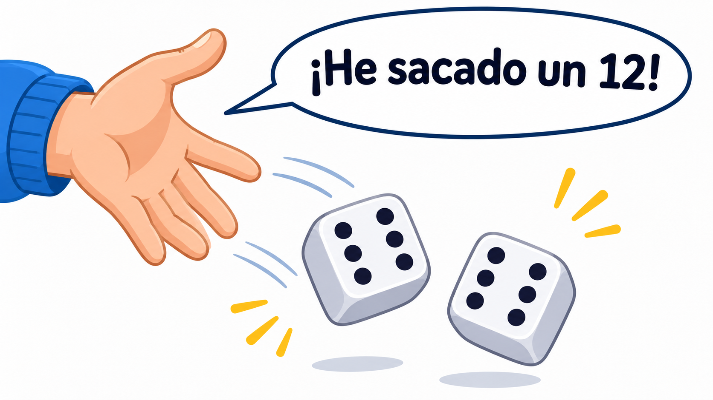

Ejercicio 6 · Sumar dos tiradas
Practica las funciones en el navegador.
Antes de empezar
Cada llamada a una función se ejecuta por separado. Guarda los resultados de dos llamadas en variables y después súmalos.
function doble(numero) {
return numero * 2;
}
let primero = doble(3);
let segundo = doble(4);
console.log(primero + segundo); // 14Tu turno
Abre este archivo con Live Server y la consola del navegador (F12 → Consola).
Invoca rollDice dos veces, guarda cada resultado, suma las dos tiradas y muestra únicamente la suma en la consola.
Resultado esperado (pulsa para verlo)

La suma cambiará en cada ejecución y debe estar entre 2 y 12.